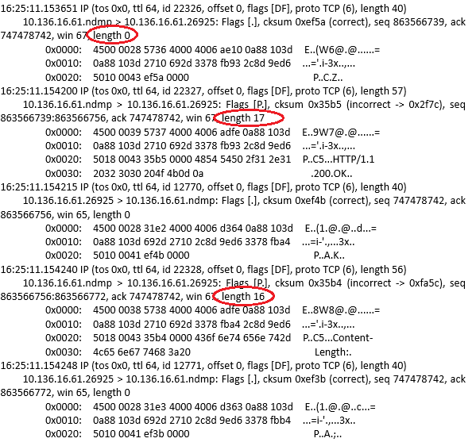

written by Alex Stocks on 2016/08/01
最近鄙人在用golang撸一个rpc框架，表示层协议采用了HTTP协议，在进行性能测试的时候发现server端给客户端进行回复的时候，一个大小282B的TCP响应包竟然被拆分成了超过30个TCP包返回给了客户端，其中大部分包长度不超过10B！
通过追踪Go的内部代码以及相关工具的辅助下最终完成了把HTTP response通过一个TCP packet完成传输的优化过程。
2016/07/30比人给rpc框架谢了一个简单的echo测试用例，在服务端用tcpdump抓包(command: tcpdump -Xnlpvvs0 -S port 10000 -iany)时惊讶地发现了前言中叙述的问题，抓包详细结果比较大(如果你感兴趣请点击链接http-slices)，在此只给出关键部分的截图：

根据抓包的结果，直觉是server端把一次HTTP响应内容拆分成很多子tcp packet发送了客户端。
为了验证更深入地分析server端程序写响应的过程，祭出大杀器strace(command: strace -p 32732 -f)分析整个过程中server端程序的系统调用流程，整个流程结果也比较大(如果你感兴趣请点击链接http-server-strace)，在此只给出关键部分的截图：
截图中几个醒目的地方很显然地给出了问题的答案：多次tcp小包回写。
通过相关工具找到了问题所在，下一步就是通过分析代码流程，找出问题相关的代码块所在。
下面先贴出rpc框架中给客户端返回response的关键代码：
func SendResponse(m *Message) error {
rsp := &http.Response{
Header: r.Header,
Body: &buffer{b},
Status: "200 OK",
StatusCode: 200,
Proto: "HTTP/1.1",
ProtoMajor: 1,
ProtoMinor: 1,
ContentLength: int64(len(m.Body)),
}
return rsp.Write(h.conn) // h.conn is net.TcpConn
}
上面代码构造了一个http.Response对象rsp，然后借助于golang的内部函数net/http/response.go:(*Response)Write把rsp写回给client。
要继续追踪问题，就须查看上面的Write函数的具体实现了，其关键代码如下：
// https://github.com/golang/go/blob/master/src/net/http/response.go
func (r *Response) Write(w io.Writer) error {
// Status line
protoMajor, protoMinor := strconv.Itoa(r.ProtoMajor), strconv.Itoa(r.ProtoMinor)
statusCode := strconv.Itoa(r.StatusCode) + " "
text = strings.TrimPrefix(text, statusCode)
if _, err := io.WriteString(w, "HTTP/"+protoMajor+"."+protoMinor+" "+statusCode+text+"\r\n"); err != nil {
return err
}
// Clone it, so we can modify r1 as needed.
r1 := new(Response)
*r1 = *r
if r1.ContentLength == 0 && r1.Body != nil {
// Is it actually 0 length? Or just unknown?
var buf [1]byte
r1.Body.Read(buf[:])
r1.ContentLength = -1
r1.Body = struct {
io.Reader
io.Closer
}{
io.MultiReader(bytes.NewReader(buf[:1]), r.Body),
r.Body,
}
}
// If we're sending a non-chunked HTTP/1.1 response without a
// content-length, the only way to do that is the old HTTP/1.0
// way, by noting the EOF with a connection close, so we need
// to set Close.
if r1.ContentLength == -1 && !r1.Close && r1.ProtoAtLeast(1, 1) && !chunked(r1.TransferEncoding) {
r1.Close = true
}
// Process Body,ContentLength,Close,Trailer
tw, err := newTransferWriter(r1)
if err != nil {
return err
}
err = tw.WriteHeader(w)
if err != nil {
return err
}
// Rest of header
err = r.Header.WriteSubset(w, respExcludeHeader)
if err != nil {
return err
}
// contentLengthAlreadySent may have been already sent for
// POST/PUT requests, even if zero length. See Issue 8180.
contentLengthAlreadySent := tw.shouldSendContentLength()
if r1.ContentLength == 0 && !chunked(r1.TransferEncoding) && !contentLengthAlreadySent {
if _, err := io.WriteString(w, "Content-Length: 0\r\n"); err != nil {
return err
}
}
// End-of-header
if _, err := io.WriteString(w, "\r\n"); err != nil {
return err
}
// Write body and trailer
err = tw.WriteBody(w)
if err != nil {
return err
}
// Success
return nil
}
通过上面的代码，可见golang的策略是在序列化HTTP的内容的过程中逐步把序列化结果写入@w(w io.Writer)中的，符合抓包内容表现以及系统跟踪的系统函数调用分析结果。
那么，解决方法不可能是hack golang的这个函数，能改变的只能是rpc框架对这个函数的调用方式。
鄙人目前能否想到的思路就是给Response.Write method传入一个buffer，让这个method先把HTTP response内容写入这个buffer，然后再把buffer缓存所有个内容一次性地写入net.TcpConn中。
根据这个思路，修改后的SendResponse函数关键代码如下：
func SendResponse(m *Message) error {
rsp := &http.Response{
Header: r.Header,
Body: &buffer{b},
Status: "200 OK",
StatusCode: 200,
Proto: "HTTP/1.1",
ProtoMajor: 1,
ProtoMinor: 1,
ContentLength: int64(len(m.Body)),
}
/*
return rsp.Write(h.conn)
*/
rspBuf := bytes.NewBuffer(make([]byte, 0))
err := rsp.Write(rspBuf)
if err != nil {
return err
}
_, err = rspBuf.WriteTo(h.conn)
return err
}
改进代码并重新部署程序后，用tcpdump抓包结果如下：

从截图内容可以看出改进后的代码确实达到了我的目的。同样地，如果你对整个抓包结果感兴趣，请点击链接http-merge)。
优化无止境，每个人都有自己的观察方法和追踪套路，多掌握一些工具对优化效率的提高大有裨益。
吾人愚人也，记忆力很差劲，本文记述整个优化过程最重要的目的仅为本人备忘，此次优化过程花费了我一天时间和精力，如果你有更好的方法请不吝赐教！
此记。
于雨氏，2016/08/01，初作此文于东沪。